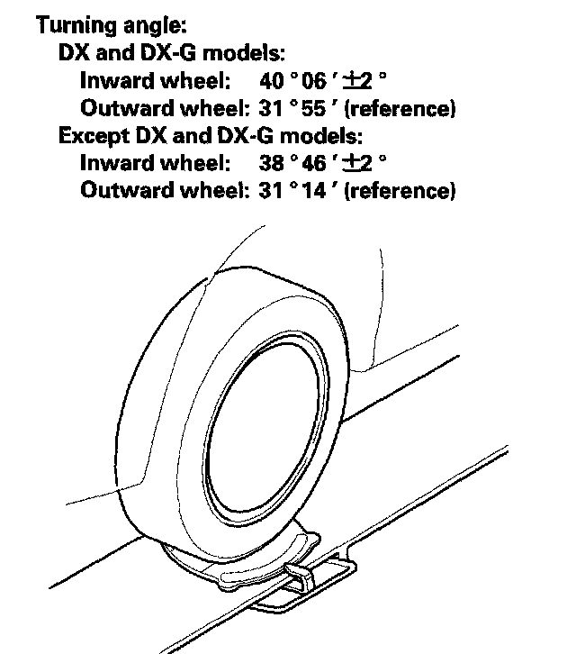

Alignment: Specifications
CamberCamber angle:
Front 0° 00' ± 30'
(Maximum difference between the front right and left side: 0° 35')
Rear -1° 30' (+1° 05', -0° 45')
Caster
Caster angle 7° 00' ± 1°
Front Toe-in
Front toe-in 0 ± 2 mm (0 ± 0.08 in.)
Rear Toe-in
Rear toe-in 2 (+2, -1) mm (0.08 (+0.08, -0.04 in.))
Turning Angle
